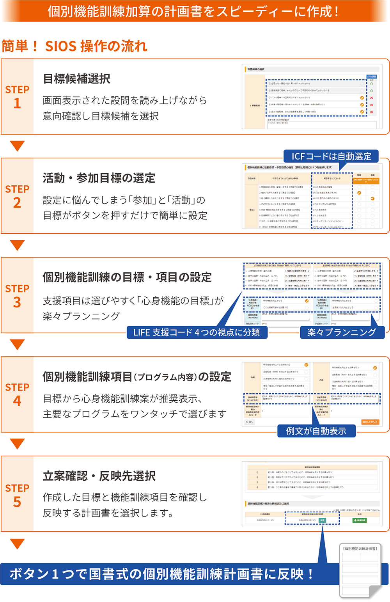
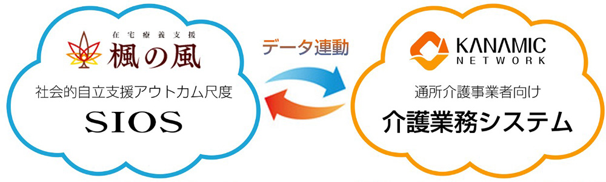

- 各位
- 2022年1月17日
会 社 名 株式会社カナミックネットワーク
代表者名 代表取締役社長 山本 拓真
（コード番号：3939 東証第一部）
カナミックネットワークと楓の風がデイサービスにおける
個別機能訓練計画策定支援システム「SIOSプランニング」をリリース
医療・介護分野に特化し「地域包括ケアシステム」の実現に寄与するクラウドサービスを提供する株式会社カナミックネットワーク（本社：東京都渋谷区、代表取締役社長：山本拓真、以下「当社」）と株式会社楓の風（本社：神奈川県横浜市、代表者：小室貴之、以下「楓の風」）はデイサービス事業者向けのICTソリューションとなる個別機能訓練計画策定支援システム「SIOSプランニング」をリリースしました。
SIOSプランニング開発の背景
令和３年度介護報酬改正にて、デイサービス事業者が取り組む個別機能訓練加算の指針がICF（国際生活機能分類）への準拠が求められ、心身機能、活動、参加の短期・長期それぞれ計６つもの目標設定を定めるよう変更されたことに加え、この改定と併せて科学的介護への取り組みも始まり、個別機能訓練加算を同時に取り組むことで、個別機能訓練加算Ⅰ及びⅡがダブル算定できる条件へと業界へ自立支援ケアの推進とICT化へのレベルアップが求められる結果となりました。
しかし、本改正に対応した個別機能訓練の目標設定そのものが困難であり、職員の大幅な残業時間の増加に至っています。また、厚労省が近年問題視している、肝心の要介護者の意向が反映されていないことも課題となっており、適切なケアのPDCAサイクルに基づいたICTソリューションが必要不可欠となっています。
そこで当社と楓の風は、長年個別機能訓練計画策定支援の在り方について検討を重ね、要介護者の自立支援介護のアウトカム研究に始まり、今日ICTソリューションとして「SIOSプランニング」を開発し、販売を開始いたしました。
SIOSプランニングの特長
「SIOSプランニング」は、楓の風と昭和大学保健医療学部により研究開発された社会的自立支援アウトカムスケール「SIOS（サイオス）」をベースに作られた個別機能訓練計画策定支援ツールで、全部で11の設問からなるICF研究から導き出されたアンケート文を読み上げながらご利用者の意向を伺い、その結果からICFに準拠した「心身機能」「活動」「参加」の目標候補を半自動で推奨し、ご利用者と共にボタン一つで選択、設定可能な画期的なツールです。
| ① | 心身機能、活動、参加の短期長期計６つの目標設定が半自動で作成可能 |
| ② | ４つの個別機能訓練項目も半自動で作成可能 |
| ③ | ICF及びLIFE支援コードは自動選別されるので該当コードを探す手間が不要 |
| ④ | 目標設定の根拠がSIOS面談記録、実地指導対策万全 |
| ⑤ | 個別機能訓練計画書作成時間を６割削減に成功（楓の風職員比） |
| ⑥ | 毎月開催されるオンライン自立支援ケア養成講座無料受講付きで確実な定着を支援 |
基本報酬が年々減少傾向にあるデイサービスにおいて、個別機能訓練加算算定と科学的介護への取組みが必須の中、30人定員登録100人程の一般的なデイサービスであれば、関連加算算定で70万円程の増収も可能です。
当社と楓の風は「SIOSプランニング」を通じて、残業時間ゼロで取り組めるデイサービス運営支援と科学的介護の実現に寄与してまいります。
「SIOSプランニング」と「カナミッククラウドサービス」の連携


「在宅療養支援 楓の風」について
最期まで自分らしく地域で生きる社会の実現に向け、自立支援型デイサービスを直営及びFCで45拠点、訪問看護ステーション17拠点、在宅療養支援診療所５拠点を運営する医療介護の専門職集団です。近年は昭和大学保健医療学部との協働により社会的自立支援のアウトカム研究を行い、令和３年度介護報酬改正でレベルアップが図られた個別機能訓練加算への対策ソリューションや自立支援ケア研修を提供しております。
「カナミッククラウドサービス」について
超高齢社会に求められる「地域包括ケアシステム」の実現に寄与するために、地方自治体や医師会及び介護サービス事業者向けの多職種間連携を可能にする地域連携型クラウドサービス。多職種他法人間の連携を目的とした情報共有システムと、介護事業者向けの業務システムをご提供しております。
以 上
本件に関するお問い合わせ先
株式会社カナミックネットワーク 管理部
所在地 〒150-6031 東京都渋谷区恵比寿4-20-3 恵比寿ガーデンプレイスタワー31階
ＴＥＬ 03-5798-3955
ＦＡＸ 03-5798-3951